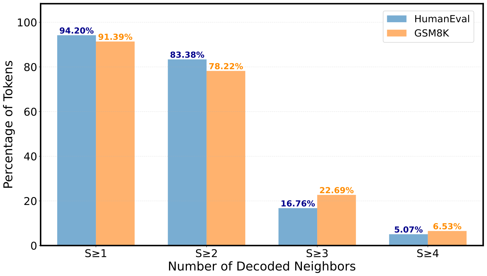
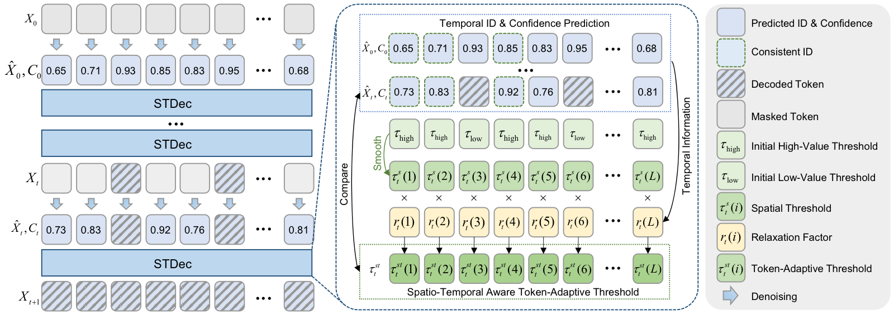

STDec: Spatio-Temporal Stability Guided Decoding for dLLMs

Contributions
(1) Spatio-temporal stability as a decoding signal: We show that dLLM decoding exhibits strong spatial stability and temporal stability: newly decoded tokens tend to appear near decoded neighbors, and many token IDs remain consistent for multiple denoising steps before the final commit.
(2) A simple training-free decoder: We propose STDec, which combines spatial-aware decoding and temporal-aware decoding to replace a single global confidence threshold with token-adaptive thresholds derived from local decoded states and historical ID consistency.
(3) Strong efficiency-quality trade-off across modalities: Experiments on Dream, LLaDA, and LaViDa show that STDec delivers substantial throughput gains on textual reasoning, code generation, and multimodal understanding, while remaining compatible with cache-based acceleration methods.
Motivation
Existing dLLM decoders usually rely on a global threshold such as top-k decoding or fixed-threshold selection. These strategies treat all masked positions equally, even though the denoising process is highly structured. In practice, current decoding decisions depend strongly on whether a token lies near already decoded neighbors and whether its predicted ID has already stabilized across previous steps.

Thresholding gap. Global thresholding and anchor-based policies only partially exploit the structure that appears during denoising.

Spatial stability. Decoded tokens usually emerge near already decoded tokens, which suggests that nearby decoded neighborhoods can safely lower local thresholds.

Temporal stability. Many tokens maintain the same predicted ID for several denoising steps before they are officially decoded, indicating that these stable tokens can be committed earlier.
Method
STDec computes token-adaptive decoding thresholds by combining local decoded context with cross-step prediction consistency. Spatial-aware decoding constructs a threshold map from decoded and masked states, then smooths it so positions near decoded neighbors become easier to commit. Temporal-aware decoding further relaxes thresholds for masked tokens whose predicted IDs remain consistent across denoising steps. The final decoder commits tokens when their confidence exceeds their own spatio-temporal threshold instead of a universal global one.

Overall framework of STDec. The decoder first builds a spatially smoothed threshold map from current decoding states, then applies temporal relaxation to tokens with stable predicted IDs, and finally decodes tokens using the resulting token-adaptive thresholds.
Main Results
| Task | Method | Dream-7B-Instruct | LLaDA-8B-Instruct | ||||
|---|---|---|---|---|---|---|---|
| TPS | Speed | Score | TPS | Speed | Score | ||
| Code | |||||||
| MBPP | Vanilla | 6.57 | 1.00× | 51.40 | 5.68 | 1.00× | 37.60 |
| + Half-Step | 13.11 | 2.00× | 35.80 | 11.51 | 2.02× | 34.80 | |
| + dKV-Cache | 11.12 | 1.69× | 49.60 | 10.18 | 1.79× | 39.00 | |
| + Fast-dLLM | 56.88 | 8.66× | 54.80 | 62.68 | 11.04× | 37.40 | |
| + LocalLeap | 63.65 | 9.69× | 53.60 | 76.48 | 13.46× | 37.60 | |
| + STDec | 91.16 | 13.88× | 55.60 | 80.47 | 14.17× | 38.40 | |
| HumanEval | Vanilla | 11.82 | 1.00× | 59.15 | 10.82 | 1.00× | 48.17 |
| + Half-Step | 23.69 | 2.00× | 35.37 | 21.67 | 2.00× | 35.37 | |
| + dKV-Cache | 15.21 | 1.29× | 56.10 | 14.23 | 1.32× | 46.95 | |
| + Fast-dLLM | 46.87 | 3.97× | 62.20 | 38.49 | 3.56× | 48.78 | |
| + LocalLeap | 53.80 | 4.55× | 58.54 | 50.33 | 4.65× | 46.34 | |
| + STDec | 64.50 | 5.46× | 60.37 | 52.92 | 4.89× | 48.78 | |
| Mathematics & Science | |||||||
| GPQA | Vanilla | 6.95 | 1.00× | 32.83 | 6.24 | 1.00× | 28.79 |
| + Half-Step | 13.88 | 2.00× | 32.32 | 12.66 | 2.02× | 30.81 | |
| + dKV-Cache | 13.21 | 1.90× | 33.33 | 12.33 | 1.98× | 32.32 | |
| + Fast-dLLM | 88.95 | 12.80× | 34.85 | 62.61 | 10.03× | 28.79 | |
| + LocalLeap | 149.15 | 21.46× | 33.33 | 74.60 | 11.96× | 29.29 | |
| + STDec | 193.62 | 27.86× | 32.83 | 92.08 | 14.76× | 29.29 | |
| GSM8K | Vanilla | 4.71 | 1.00× | 83.47 | 4.19 | 1.00× | 78.01 |
| + Half-Step | 9.41 | 2.00× | 74.22 | 8.25 | 1.97× | 75.82 | |
| + dKV-Cache | 9.83 | 2.09× | 79.08 | 8.82 | 2.11× | 77.63 | |
| + Fast-dLLM | 17.20 | 3.65× | 82.94 | 12.16 | 2.90× | 78.77 | |
| + LocalLeap | 20.71 | 4.40× | 82.49 | 17.01 | 4.06× | 77.98 | |
| + STDec | 23.70 | 5.03× | 82.34 | 16.94 | 4.04× | 78.01 | |
| MATH | Vanilla | 12.67 | 1.00× | 44.64 | 11.90 | 1.00× | 40.38 |
| + Half-Step | 25.31 | 2.00× | 39.40 | 23.64 | 1.99× | 39.44 | |
| + dKV-Cache | 15.56 | 1.23× | 44.04 | 14.73 | 1.24× | 40.90 | |
| + Fast-dLLM | 40.26 | 3.18× | 44.16 | 39.00 | 3.28× | 41.00 | |
| + LocalLeap | 52.35 | 4.13× | 44.26 | 49.93 | 4.20× | 39.66 | |
| + STDec | 55.15 | 4.35× | 44.64 | 53.05 | 4.46× | 39.86 | |
| Average | Vanilla | 8.54 | 1.00× | 54.30 | 7.77 | 1.00× | 46.59 |
| + Half-Step | 17.08 | 2.00× | 43.42 | 15.55 | 2.00× | 43.25 | |
| + dKV-Cache | 12.99 | 1.52× | 52.43 | 12.06 | 1.55× | 47.36 | |
| + Fast-dLLM | 50.03 | 5.86× | 55.79 | 42.99 | 5.53× | 46.95 | |
| + LocalLeap | 67.93 | 7.95× | 54.44 | 53.67 | 6.91× | 46.17 | |
| + STDec | 85.63 | 10.03× | 55.16 | 59.09 | 7.60× | 46.87 | |
| Task | Method | TPS | Speed | Score |
|---|---|---|---|---|
| MathVerse | LaViDa w/o Prefix-DLM | 5.71 | 1.00× | 28.30 |
| + Prefix-DLM | 12.22 | 2.14× | 27.03 | |
| + Fast-dLLM | 11.94 | 2.09× | 28.68 | |
| + LocalLeap | 14.31 | 2.51× | 28.30 | |
| + STDec | 18.22 | 3.19× | 28.30 | |
| MathVision | LaViDa w/o Prefix-DLM | 5.34 | 1.00× | 19.74 |
| + Prefix-DLM | 12.09 | 2.26× | 20.39 | |
| + Fast-dLLM | 10.87 | 2.04× | 20.72 | |
| + LocalLeap | 12.81 | 2.40× | 21.71 | |
| + STDec | 16.71 | 3.13× | 21.71 | |
| MathVista | LaViDa w/o Prefix-DLM | 5.66 | 1.00× | 47.20 |
| + Prefix-DLM | 12.38 | 2.19× | 40.90 | |
| + Fast-dLLM | 15.31 | 2.70× | 47.50 | |
| + LocalLeap | 18.19 | 3.21× | 47.70 | |
| + STDec | 24.66 | 4.36× | 46.20 | |
| Average | LaViDa (baseline) | 5.57 | 1.00× | 31.75 |
| + STDec | 19.86 | 3.57× | 32.07 |

Composability on LLaDA. STDec can be stacked with dKV-Cache and still adds substantial extra throughput gains over the cache baseline.

Composability on LaViDa. STDec also complements Prefix-DLM style caching on multimodal understanding, improving efficiency without disrupting output quality.
Qualitative Results

Case study on multimodal understanding. On LaViDa-Reason, STDec preserves the same key objects and relative spatial relations in the generated scene description while reducing decoding time from 99.17s to 34.41s (2.88× speedup).
Same reasoning outcome, much faster decoding
On GSM8K examples from the appendix, Dream with STDec keeps the same final boxed answer as the baseline while cutting latency from 11.59s to 2.30s on one example and from 11.25s to 3.59s on another.
Stable content under earlier commitment
Appendix case studies show that LLaDA with STDec preserves the original reasoning structure and final answer on GSM8K while speeding decoding from 12.04s to 2.55s and from 11.94s to 2.60s.
Citation
@article{chen2026stdec,
title={STDec: Spatio-Temporal Stability Guided Decoding for dLLMs},
author={Chen, Yuzhe and Cao, Jiale and Liu, Xuyang and Xie, Jin and Yang, Aiping and Pang, Yanwei},
journal={arXiv preprint},
year={2026}
}